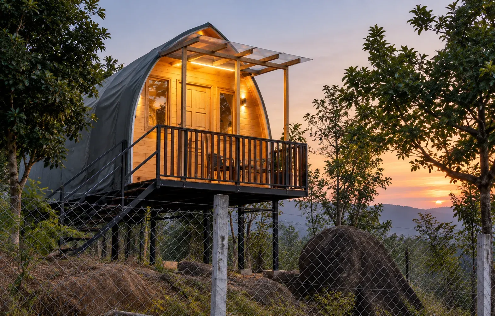
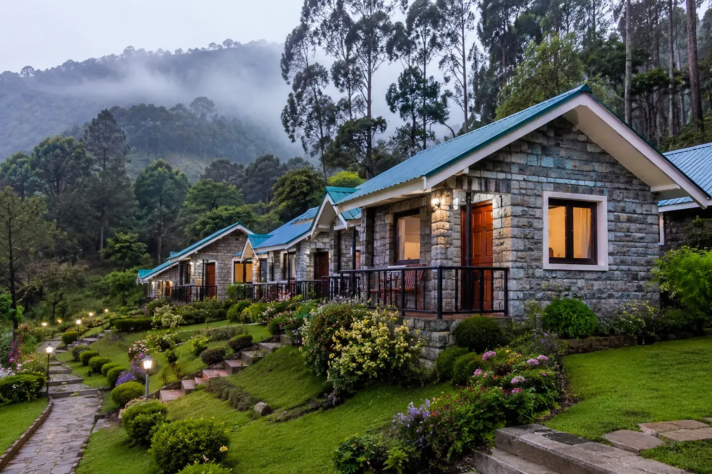
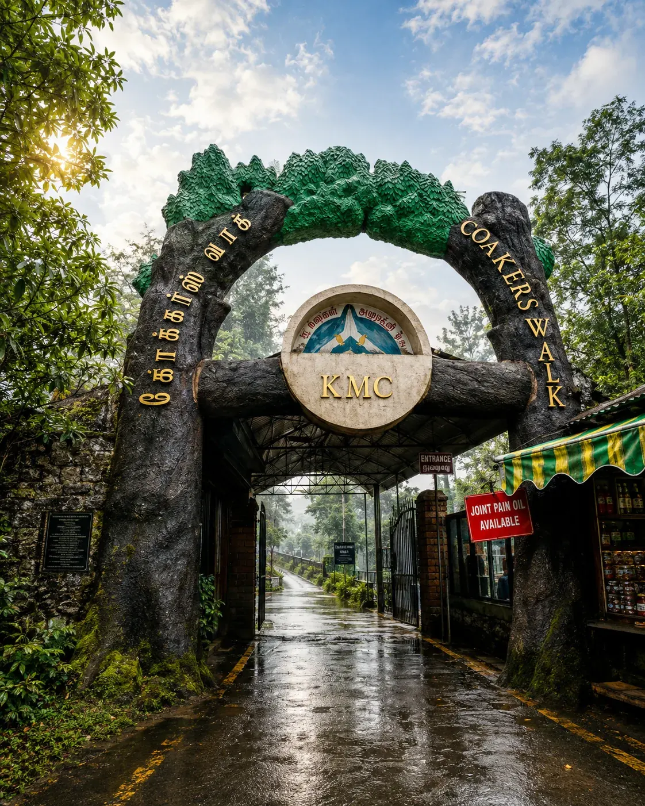

~30minutes
Palani to Oddanchatram
A short, open stretch out of the temple town. Quick if you leave straight after darshan, so the first leg of the Palani to Kodaikanal drive is easy.
Darshan first, hills next
The private Palani to Kodaikanal cab from Cottages Kodaikanal covers the 65 km in 2 to 2.5 hours. Best for temple visitors, families and groups who want a driver who knows the ghat road.

Temple-to-hills transfer
Yes. Many travellers combine the Palani Murugan temple with onward travel to Kodaikanal. Your driver waits near the temple, bus stand or hotel until you're ready. One booking covers both the wait during darshan and the 65 km drive up.
Take your time at the hilltop shrine. The cab fits around your darshan.
Your driver waits near the temple or bus stand; tell us roughly how long.
Luggage goes straight into the same car, so no second cab is needed.
Your drive ends at your cottage door, usually the same afternoon.
The Palani to Kodaikanal run is shorter than from most gateway towns, leaving room for a long darshan. In the cooler months, an early-morning darshan makes for the most comfortable start.
Fare sheet
One-way starting fares by vehicle, with the Palani to Kodaikanal distance taxi fare worked out for the 65 km run. Car rental with driver is quoted the same way. Round trip and multi-day rates are quoted once we know your dates.
Pick by group size: a sedan for 3–4, an SUV up to 7, a tempo traveller or coach for bigger families and groups. Fares are 2026 starting prices. Toll and hill-station entry charges, if any, are added at actuals.
One of the shortest ways up
Take SH 83 and NH 183: flat near Oddanchatram, then a climb through forest and tea plantations. An alternative stretch on the same highway network is used if the ghat sees temporary closures. Every Palani to Kodaikanal cab follows this same road, so the driver matters most.
A short, open stretch out of the temple town. Quick if you leave straight after darshan, so the first leg of the Palani to Kodaikanal drive is easy.
The land folds into hills here, a good spot for a quick break before the climb. Your driver can stop for tea.
About 20 km of hairpins through dense forest and tea plantations, with viewpoints at several bends. Most of the elevation is gained here.
About 65 km, one of the shorter gateway routes. The last 20 km of switchbacks gain most of Kodaikanal's 2,100 metre elevation. The Palani to Kodaikanal distance feels longer than it reads.
2 to 2.5 hours non-stop; the drive rarely goes past 3 hours. Early departures after darshan usually clear traffic fastest. Add time for a breakfast stop or temple wait.
Shape your trip
Any duration can be shaped around one of these themes. Tell us which fits your trip from Palani. Each package starts with the Palani to Kodaikanal transfer, in one car with one driver.
 Create lasting memories
Create lasting memoriesSightseeing and activities for all ages across meadows and popular attractions, planned around one transfer.

After your temple visitCosy stays and candlelight dinners with views, easy to add after a temple visit.
 Beyond the usual loop
Beyond the usual loopMannavanur Lake and bird-watching trails, with the same car all day.
 With local guides
With local guidesTrekking, camping and climbing, arranged with local guides.

Explore more, spend lessGroup tours and comfortable budget stays that let you explore more for less.
Yes, from a one-day transfer-and-tour to three days. The 2-Day Kodaikanal Getaway (transfer, one night's stay, a full day at the lake, Coaker's Walk and Pillar Rocks) is the most booked. Travelling with 8 or more? Ask about the group tour package.
Choose your way
A Palani to Kodaikanal cab or taxi is the most booked option. You can also take a bus from Palani to Kodaikanal, but bus booking and timings rarely line up with a temple visit, and a car leaves when you do.
Door-to-door and flexible, with your temple visit built in. The driver waits and drops you at your cottage.
Cheapest per seat, but timings are fixed and the cabin is shared. We don't sell bus tickets; we run private cars.
A shared taxi leaves once full, with extra stops. For a direct run, book a private cab from Palani.
Tiring after a long temple visit. Every car we run comes with a driver, so you can rest.
Yes: one way for the drop, or a round trip with the same driver.
For pilgrims who only need the drop after their temple visit. A one-way Palani to Kodaikanal cab is priced by vehicle and date.
Same cab and driver with a fixed return date, so the Kodaikanal to Palani leg is covered too. Usually the better per-km rate.
A day in Kodaikanal
Yes. The same cab can spend a full day on local sightseeing at your pace. After the Palani to Kodaikanal transfer, the first stop starts when you are rested.


Lunch is at your pace; your driver waits. Green Valley View is a favourite last stop before dusk. Plan the day with us when you book.
Plan your visit
April to June is the best time for pleasant weather; Kodaikanal suits every season.
Pleasant hill weather; the most popular season for travel and the temple. Book early for a Palani to Kodaikanal transfer then.
Lush and green; watch for landslide caution on the ghat. Allow extra time for the climb.
Cold, misty mornings, and cooler for an early temple visit. Carry a warm layer for arrival.
Book in minutes
Message us on WhatsApp or call. Booking takes only a few minutes. As a local Palani travels operator we confirm the cab and fare, and the same car can bring you back for the return. Going back by bus instead? The Kodaikanal to Palani bus time is worth checking before you travel.
Guest reviews
Our cabs and jeeps, including the Palani to Kodaikanal run, are run by the same family that hosts these guests.
We booked a family cottage for five of us and it never felt cramped. Staff arranged everything from bonfire wood to breakfast timing.
Traveled from Bengaluru for a college reunion — the group stay cottage fit all ten of us with room to spare.
Our honeymoon stay had exactly the privacy we wanted — hills outside the window, a fireplace for the cold evenings.
Find us
Cottages Kodaikanal, Near Zion School Junction, MM Street, Lawsghat Road, Kodaikanal - 624101.
Open in Google Maps · Directions from Palani · Call +91 75023 45777
From Coimbatore, Madurai, Dindigul, Palani or Kodai Road.
Questions
Distance & journey
The road distance is about 65 km via Oddanchatram, which takes roughly 2 to 2.5 hours by cab depending on traffic and the ghat road.
The drive runs through Oddanchatram, the main midway stop before the ghat climb into Kodaikanal. A handy place for tea or a break.
Typically 2 to 2.5 hours non-stop. Add extra time if you're combining the drive with a temple visit at Palani or a breakfast halt.
It's driveable, but we recommend arriving before dusk where possible, because the hairpin bends are easier to judge in daylight.
Fare & booking
Fares start from ₹2,500 for an Etios, ₹3,500 for a Tavera or Qualis, ₹4,000 for a Jeep or Innova, ₹5,000 for a Tempo Traveller, and ₹6,000 for a 20-seater coach, depending on your date.
Yes. Round trips are usually a better per-kilometre rate, since the same cab and driver stay with you for the return leg too.
Share your pickup point, travel date and preferred vehicle over WhatsApp or by phone, and we confirm your driver and fare the same day.
A day's notice is usually enough, though weekends and festival periods are safer booked a few days ahead.
Temple pickup & vehicles
Yes. Many travellers visit the Palani Murugan temple first and have their cab waiting to continue straight on to Kodaikanal afterward. One booking covers both.
Yes. Just let us know an approximate waiting time when you book, and your driver will be ready near the temple or bus stand when you return.
Sedans for up to 4 passengers, SUVs or Innovas for up to 7, and tempo travellers for groups of 9 to 17.
SUVs handle the ghat bends most comfortably for families or anyone prone to motion sickness, though sedans manage the route fine too.
Packages
Yes. One, two and three day packages combine your Palani transfer with stay and sightseeing in Kodaikanal, all in one booking.
Your transfer from Palani, one night's stay, and a full day of sightseeing covering the lake, Coaker's Walk and Pillar Rocks.

Palani to Kodaikanal, one-way or round trip, with temple pickup confirmed the same day.